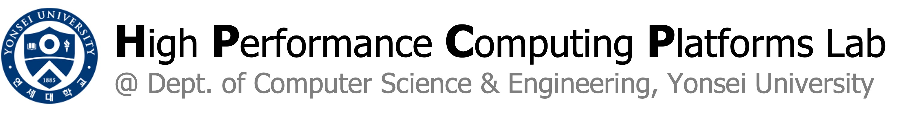

Members
Faculty
-
Youngsok Kim (김영석)
Associate Professor, Department of Computer Science and Engineering
PhD & BSc in Computer Science and Engineering, POSTECH
Graduate Students
-
Chaemin Lim (임채민)
PhD Student, Department of Computer Science and Engineering
MSc in Artificial Intelligence, Yonsei University
BA in Journalism & BEng in Computer Engineering, Hankuk University of Foreign Studies
-
Yeonan Ha (하연안)
Integrated MSc/PhD Student, Department of Computer Science and Engineering
BSc in Computer Science and Engineering, Yonsei University
-
Suhyun Lee (이수현)
Integrated MSc/PhD Student, Department of Computer Science and Engineering
BSc in Computer Science and Engineering, Yonsei University
-
Hanna Cha (차한나)
PhD Student, Department of Computer Science and Engineering
MSc in Artificial Intelligence, Yonsei University
BSc in Electrical and Electronic Engineering, Kobe University
-
Sungchul Lee (이성철)
Integrated MSc/PhD Student, Department of Computer Science and Engineering
BSc in Electrical and Electronic Engineering, Yonsei University
-
Jaeyoun Kim (김재윤)
Integrated MSc/PhD Student, Department of Artificial Intelligence
BSc in Atmospheric Sciences & Electrical and Electronic Engineering, Yonsei University
-
Jiho Park (박지호)
MSc Student, Department of Computer Science and Engineering
BSc in Computer Science and Engineering, Yonsei University
-
Hannah Vanessa Choi (최한나)
MSc Student, Department of Computer Science and Engineering
BSc in Computer Science and Engineering, Ewha Womans University
Administrative Staff
-
Sun Hee Jeong (정선희)
sunheejeong@yonsei.ac.kr
Alumni
-
Jinwoo Choi (최진우)
PhD in Computer Science and Engineering (Aug. 2025)
Now at Korea Institute of Science and Technology (KIST)
-
Jounghoo Lee (이정후)
PhD in Computer Science and Engineering (Aug. 2025)
Now at MangoBoost, Inc.
-
Seil Lee (이세일)
MSc in Artificial Intelligence (Aug. 2025)
-
Hanna Cha (차한나)
MSc in Artificial Intelligence (Aug. 2024)
Now pursuing a PhD in CSE at the HPCP Lab
-
Chaemin Lim (임채민)
MSc in Artificial Intelligence (Aug. 2023)
Now pursuing a PhD in CSE at the HPCP Lab
-
Jaeyeon Kim (김재연)
MSc in Artificial Intelligence (Aug. 2022)
Now at SAIT (삼성종합기술원)